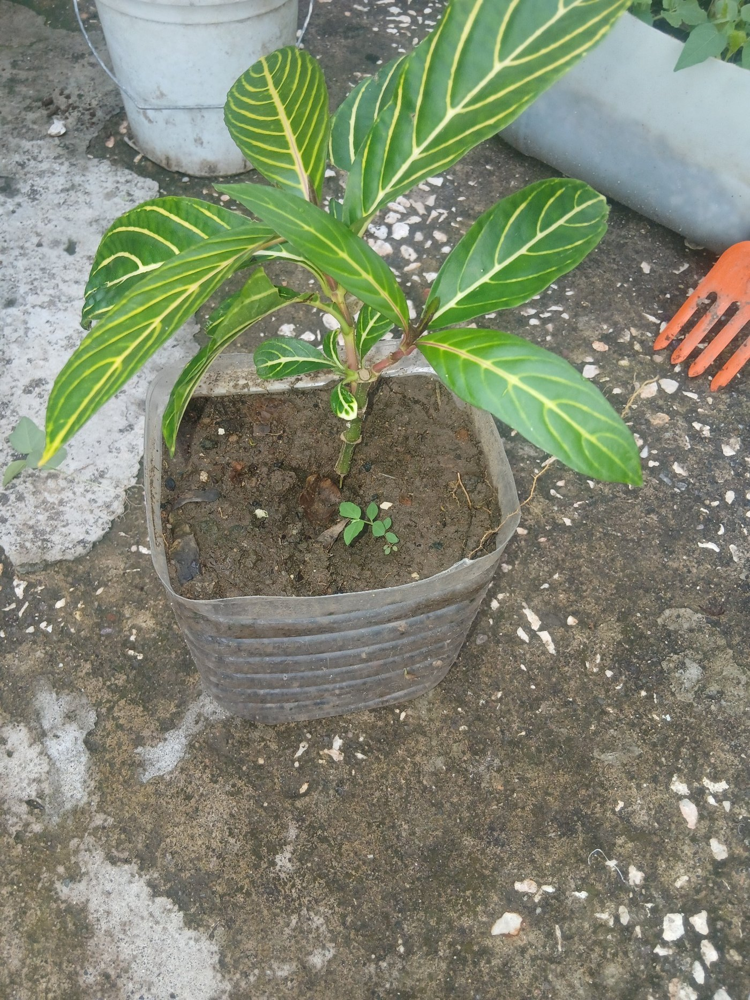
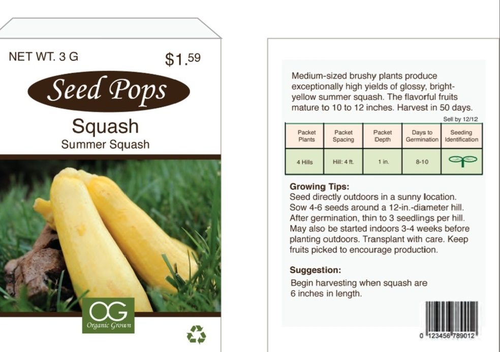

🌱 Planting in Containers – Start With What You Have
Posted 2026

You don’t need fancy pots to start gardening. Learn how I grow healthy plants
using bottles, buckets, tins, and other everyday containers right at home.
Read full guide
🌱 New Year, New Garden – Start Where You Are
Posted January 2026

A simple encouragement to start your own home garden, even if you feel you don’t
have enough space, time, or experience.
Read the full guide
🌱 Wondering Why Your Seeds Didn’t Grow?
Posted 2026

Before you blame yourself, check your seed packet, storage conditions, and a few
basic germination tips that can make a big difference.
Read full guide
🌿 Aloe Vera: The Healing Plant Every Home Should Have
Posted October 2025

Aloe Vera is one of the most useful and low-maintenance plants you can grow at home,
with traditional uses for skin, scalp, and simple home care.
Read full guide
🌿 The Life Plant and Its Healing Power
Posted October 2025

The Life Plant, also called Wonder of the World, is a favourite Caribbean herbal plant
that is easy to grow and useful to keep at home.
Read full guide
🍍 How I Planted Pineapples at Home
Posted November 2025

See how I planted pineapples using tops from market fruit and pups from an existing
plant, with simple steps and real photos from home.
Read full guide